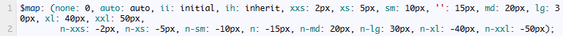

需求分析
有需求才有动力！
写CSS的时候，你经常会遇到要设置一个小边距，比如设置：
所有内边距10px，外左边距20px，内右边距0，上下内边距50px，外左右边距自动….
而你是不是又不想自己单独为它们定义一个class，然后把padding, margin之类的写进去？
举例如下：
现在我有两个p标签，我想让这两个p标签中间相隔10px，那是不是需要？
- 1<p style="margin-bottom:10px">Hello</p>
- 2<p>World</p>
又或者
- 1<p class ="m">Hello</p>
- 2.m {
- 3margin-bottom: 10px;
- 4}
这样的情况多了去了，每次都要定个样式就为了解决个边距问题？
这样子未免也太麻烦了吧!改改改，燥起来！
协议规定
那么为了解决这么一个问题，我们首先要想好解决标准。
边距层级
首先边距问题，我们首先要定义这么几个层级：
极小、很小、小、正常、中等、大、很大、极大。
对应的边距划分为：
2px、5px、10px、15px、20px、30px、40px、50px。
那么代号就标记为：
xxs、xs、sm、‘空’、md、lg、xl、xxl。
另外我们还有其他的样式，比如自动auto、初始化initial、继承inherit、无边距none。
那么代号标记为auto、ii、ih、none。
这样的划分基本可以满足需求。
简称划分
然后定义几个简称：
我们用到的单词有内边距、外边距、上下左右等，那么定义如下：
padding->p、margin->m、right->r、left->l、top->t、bottom->b、horizontal->h、vertical->v。
其中horizontal和vertical指代水平方向和垂直方向，也就是同时设置左右或者同时设置上下。
当然不能忽略了反向边距，比如外边距是负10px，这个也需要用一个简称，我们定义为n，是反向的意思。
如此一来，所有的简称和边距就规定好了。
实例说明
通过上面的层级关系和简称划分，我们可以对他们进行自由组合，形成一个个class样式。比如：
.p-t-xs 即为上内边距是5px，.p-h-md 即为左右内边距是20px，.p-b-n-lg 即为下内边距是-30px，
.p-r-xxl 即为右内边距是50px，.p-t 即为上内边距为正常边距15px（正常边距省略即可），.p-n 即为内边距是-15px。
.p-v-n 即为上下内边距是-15px，.m-h-auto 即为水平左右外边距是自动auto, .m-t-ii 即为上外边距是初始化initial。
.m-r-none 即为右外边距是0。
怎样？通过这样的定义，能不能找出规律？即
第一个字母p或者m，代表padding或者margin。
第二个字母代表方向，t上方、b下方、l左方、r右方、v上方和下方、h左方和右方。
第三个（组）字母代表距离，xs是+2px，n-lg是-30px，空是自动边距15px，n是反向正常值-15px，ii是初始化，none是无，auto是自动边距。
怎样？有了这些定义，我们是不是就能非常方便地设置边距样式了？刚才的边距怎样解决？很简单，只需要
如果一个网页里有很多样式，那只需要把整个样式文件引入，自由地添加class就好了。
编写Sass
这么多组合呢？写CSS不累死了？检查也不好检查。
怎么办？上Sass！
首先我们先定义一层映射，边距映射：
需要使用的小伙伴们直接在HTML代码中引入就好啦！
- 1<link rel="stylesheet" href="http://res.cuiqingcai.com/css/pm.css">
- 2<link rel="stylesheet" href="http://res.cuiqingcai.com/css/pm.min.css">
本文介绍了使用Sass自定义边距样式的流程，希望对大家有帮助！
上一篇没有了 下一篇
几款优秀的前端UI框架